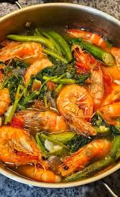

Sinigang na hipon

Description:
- 1 lb Shrimp (cleaned, head-on for flavor)
- 6 cups Water
- 2 Medium tomatoes, sliced
- 1 Onion, quartered
- 1 cup Daikon radish, sliced
- 6 Okra, trimmed
- 1 Eggplant, sliced
- 1 bunch Kangkong (water spinach)
- 2 tbsp Fish sauce
- 1 pack Sinigang mix or fresh tamarind
- 2-3 long greens
Step:
- Prepare brothBring water to a boil in a large pot. Add onion, tomatoes, and radish. Cook for 8 minutes.
- Add shrimpDrop in cleaned shrimp. Cook for 1–2 minutes until they turn pink.
- Season soupStir in sinigang mix or tamarind extract. Simmer for 3 minutes.
- Add vegetablesPut in okra, eggplant, and long green chilies. Cook for 5 minutes until tender.
- Finish with greensAdd kangkong stalks first, then leaves. Season with fish sauce and ground black pepper.
- ServeTransfer to bowls and serve hot with steamed rice.
Home